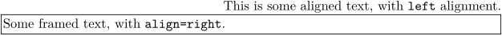
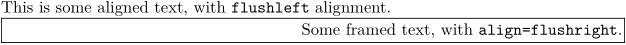
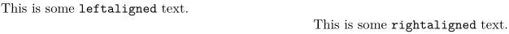

The basic commands are \setupalign for the whole document, and \startalignment for a given block. Additional alignment commands list.
- Warning
- ConTeXt uses flushleft and flushright options. The right and left alignments are backwards from the usual directions in all commands that accept an alignment option , in the sense of "ragged left" and "ragged right". Unfortunately, when Hans was first writing this part of ConTeXt, he was thinking of "ragged right" and "ragged left" alignment, rather than "flush left" and "flush right". And now that it's been this way a while, it's impossible to change it, because changing it would break backward compatibility with all of the existing documents that use it.
For instance:
-
\setuppapersize[A5] \startalignment[left] This is some aligned text, with \type{left} alignment. \stopalignment \framed[align=right,width=\textwidth]{Some framed text, with \type{align=right}.}
produces
- 
-
\setuppapersize[A5] \startalignment[flushleft] This is some aligned text, with \type{flushleft} alignment. \stopalignment \framed[align=flushright,width=\textwidth]{Some framed text, with \type{align=flushright}.}
produces
- 
Incidentally, note that \leftaligned and \rightaligned produce flush-left and flush-right alignment, with
-
\setuppapersize[A5] \leftaligned{This is some \type{leftaligned} text.} \rightaligned{This is some \type{rightaligned} text.}
producing
- 